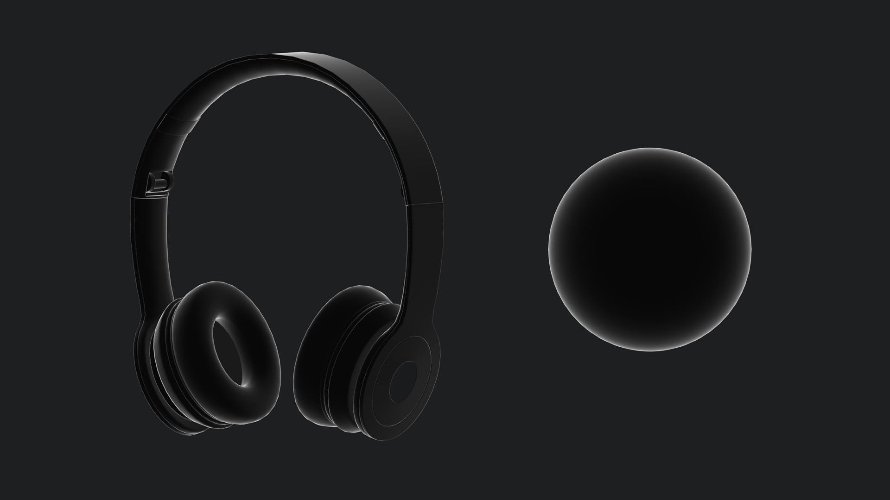
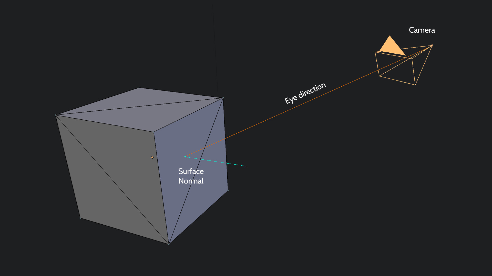

Fresnel
To create our highlight effect we are going to use something called Fresnel. Fresnel is the angle between the surface and the view/camera. If a face is pointing directly towards the camera the Fresnel value will be 0.0. A face that is at right-angles to the camera will have a Fresnel of 1.0. We can use this value to control the amount of highlight overlay colour.
float fresnel(vec3 E, vec3 N)
{
return pow(1.0 + dot(E, N), 2.0);
}N is our normal. E stands for 'eye' which is often term for the direction of a face to the center of the camera. The built in dot(E, N) function will return the angle of between those two directions.
Getting the Eye Direction
You get eye vector by applying the model and view transform (but not the projection) and then normalizing the result. Normalizing a vector keeps its direction but ensures its length is always equal to 1.
//VERTEXSHADER
varying vec3 _eye;
void main()
{
// ...
_eye = vec3(modelViewMatrix * vec4(position, 1.0));
_eye = normalize(_eye);
// ...
}Now that's set up all we have to do is apply our highlight colour. You can see we create a vec3 for our highlight colour, mutliply by the highlight variable (which is either 1 or 0) and finally again by the fresnel amount.
//FRAGMENTSHADER
// ...
varying vec3 _normal;
varying vec3 _eye;
uniform float highlight;
void main()
{
// ...
// Add highlight glow
float fr = fresnel(_eye, _normal);
vec3 highlight_colour = vec3(0.2,0.6,0.9) * highlight * (fr + 0.3);
rgb += highlight_colour;
gl_FragColor = vec4(rgb, 1.0);
}We can now update our raycasting code the use the highlight uniform and switch the effect on and off as needed.
function update_raycaster()
{
//...
// First reset the highlight effect on all the headphone parts
for(var i = 0; i < components.length; ++i)
{
var child = components[i];
if(child.material.uniforms.highlight)
child.material.uniforms.highlight.value = 0.0;
}
var viewport = screen_to_viewport(input.mouse.position);
app.raycaster.setFromCamera(viewport, camera);
var intersects = app.raycaster.intersectObjects(components, true);
if(intersects.length > 0)
{
var hit = intersects[0];
if(hit.object.material.uniforms.highlight)
hit.object.material.uniforms.highlight.value = 1.0;
}
}